biohazard
Rustscan & Nmap
‚îå‚îÄ‚îÄ(rootüíÄmatrix)-[~]
└─# rustscan -g -a 10.10.123.187
10.10.123.187 -> [21,22,80]
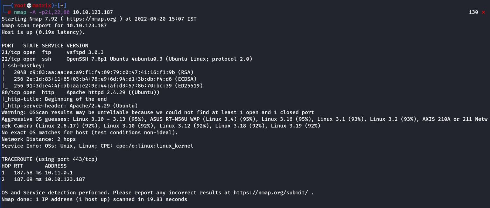
Website Enumeration
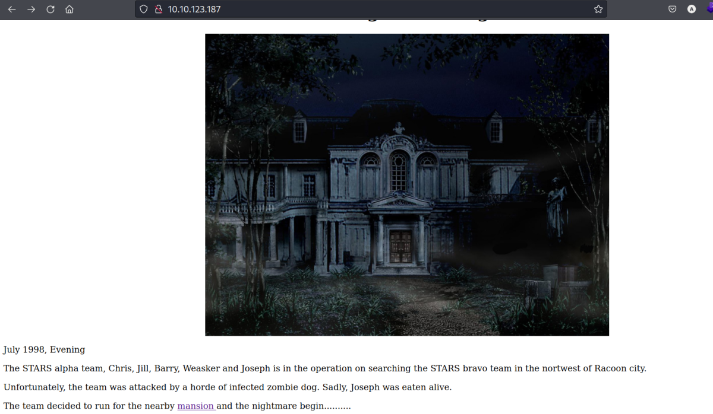
Click on the mansion link. We go to http://10.10.123.187/mansionmain/
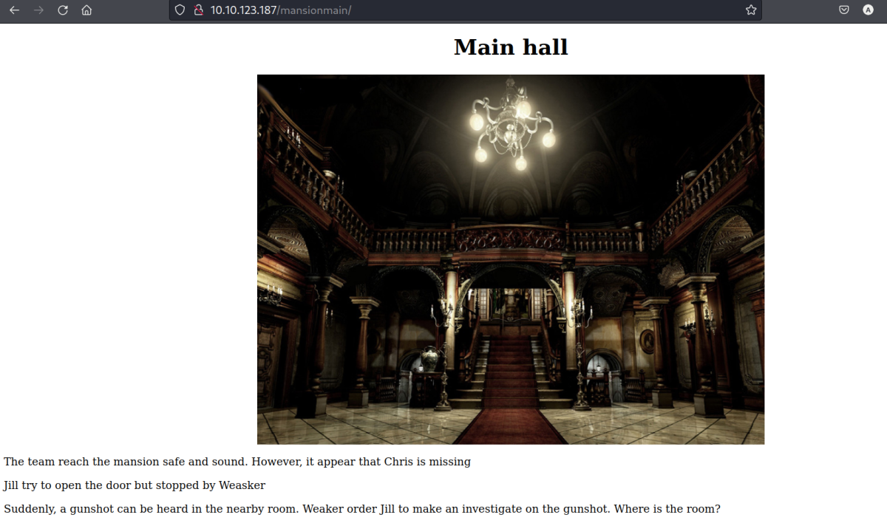
A question was asked. We view source to look for clues.

We get the answer: /diningRoom
Using the above directory

We click on YES

Looks like we got the emblem flag along with instruction to reload the /diningRoom page.
The reloaded page.

Now we get a input field which asks for the imput flag. We put the emblem flag in it and submit.
However, we went to a deadend. (Nothing happened page)
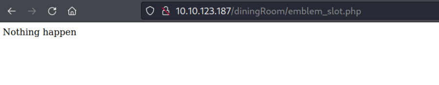
Then we go back to the /dinningRoom and view its source
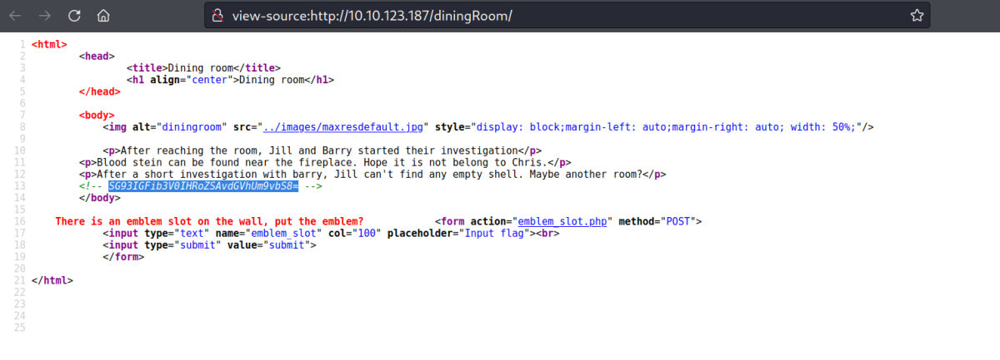
We decode it and get a hint about /teaRoom
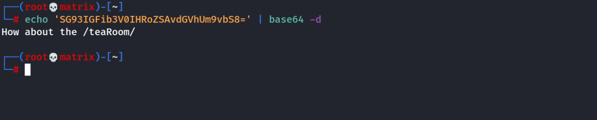
Lets open /teaRoom

We get a Lockpick Link and another room as hint /artRoom
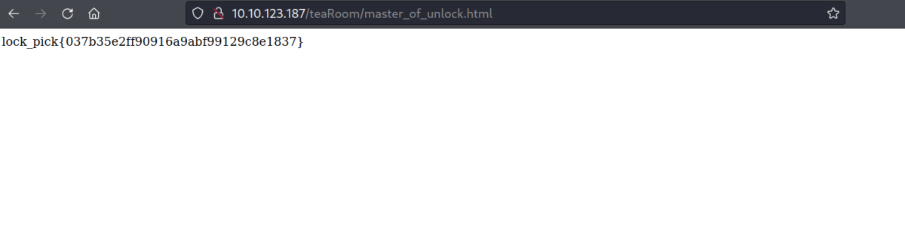
We get the lock_pick Flag. We head to /artRoom

We click YES
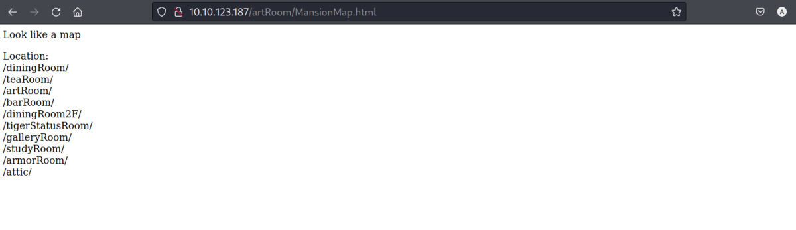
We got a map of the mansion
Lets go through the new rooms sequentially.
First we enter /barRoom

We use the lock_pick flag here and submit. It unlocked the barRoom
Flag Used: lock_pick{037b35e2ff90916a9abf99129c8e1837}
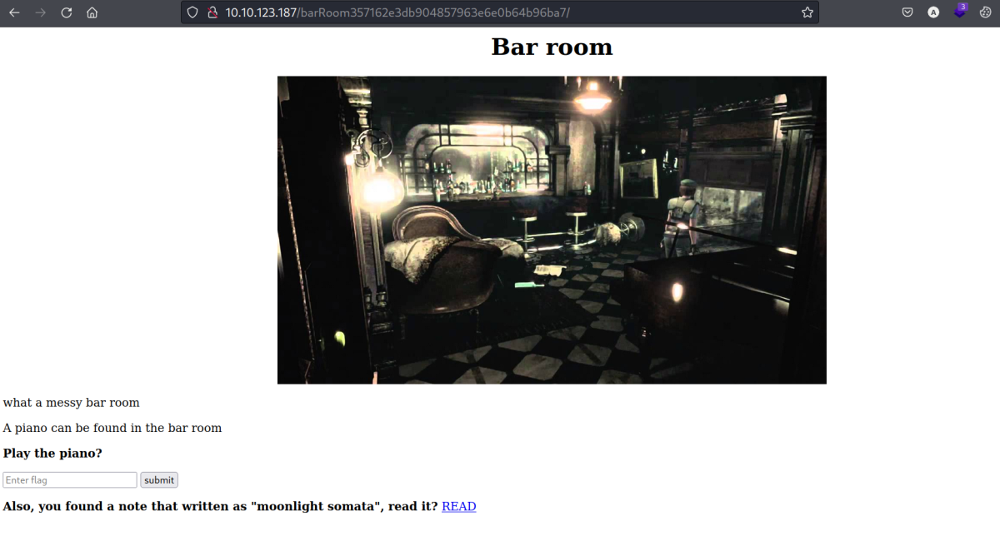
We have a READ link. We will open it.
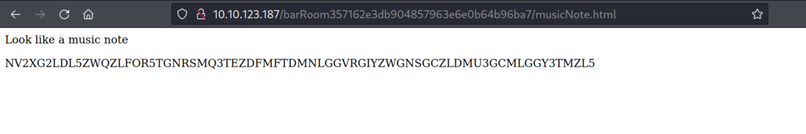
Looks like we got a decoded music note.
We decode it using base-32
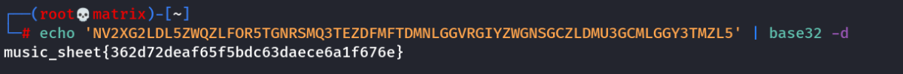
We used the above music to play the piano and submit.
Flag Used: music_sheet{362d72deaf65f5bdc63daece6a1f676e}

We landed on a secret bar room and we take the gold emblem by clicking YES

It gives us gold_emblem flag and instructs to refresh the previous page.
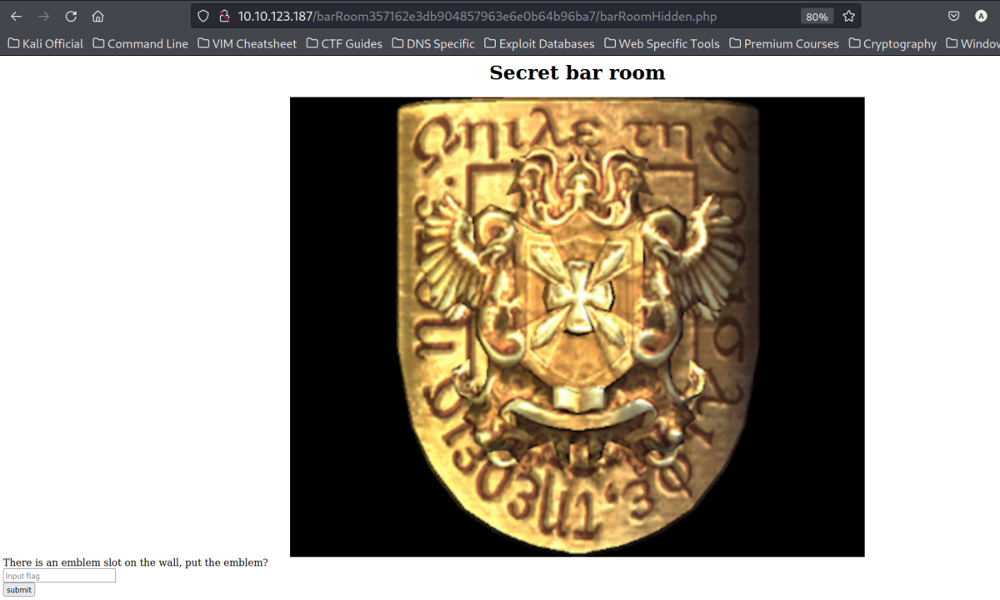
Upon Refreshing the previous page we are asked to enter an emblem flag. (We just have one such which we had found first in the /diningRoom)
Flag Used: emblem{fec832623ea498e20bf4fe1821d58727}

We got a name: rebecca
Also I remembered that /diningRoom had an input field that did not work with the normal emblem flag. Lets try the gold emblem flag there.

We entered the gold emblem flag and hit submit.
Flag Used: gold_emblem{58a8c41a9d08b8a4e38d02a4d7ff4843}

We got yet more encoded information.
I checked the encoded information in cyberchef. After trying for some time. I found that the instruction was encoded with Vigenere Cipher
It asked for a key. (I entered the plain text name “rebecca” we had found in the secret bar room)
The message was successfully decoded. We are instructed to go to the_great_shield_key inside the /diningRoom

We opened the instructed page.

We got the shield_key flag
We move on to /diningRoom2F
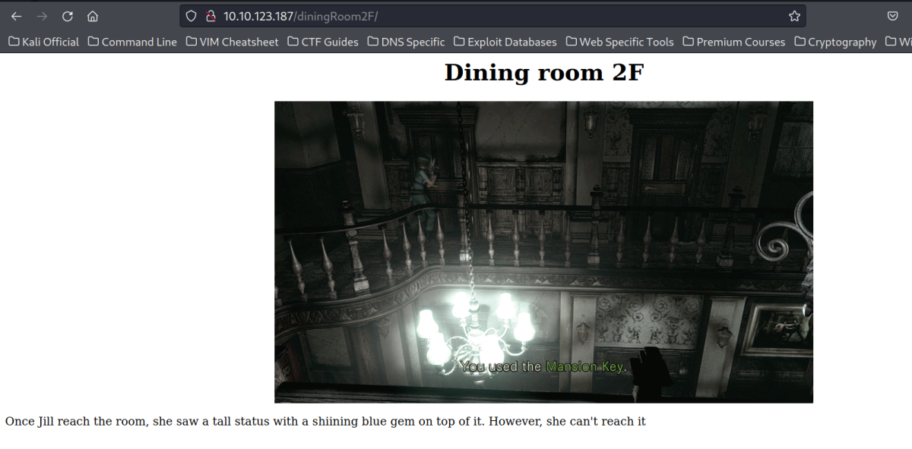
Nothing Important here. So we view its source.
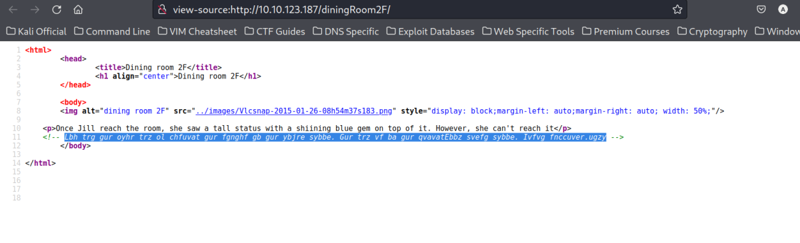
We found some encoded information. [Its looks like rot13 where alphabets are shifted 13 charecters.]
I used an universal online encoder/decoder (https://www.scopulus.co.uk/tools/hexconverter.htm) to decode the information.
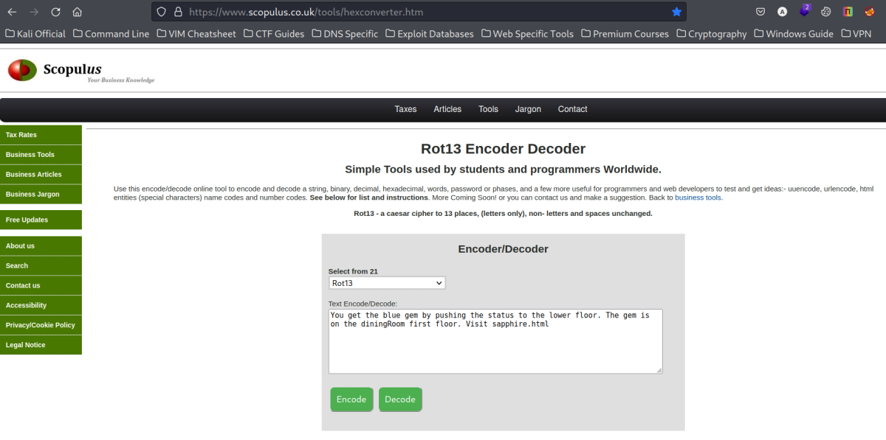
We tried various decoding formats. As expected using rot13 we decoded the message successfully.
You get the blue gem by pushing the status to the lower floor. The gem is on the diningRoom first floor. Visit sapphire.html
As instructed in the message. We go /diningRoom and into /sapphire.html

We got the blue_gem flag
Next, we continue to explore other rooms. We go to /tigerStatusRooom

It asks for a gem. Lets try to put the blue_gem flag here.
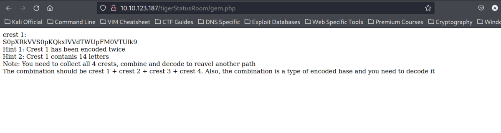
We got the above message. We need to find 4 such crests and combine them then decode them to reveal some path.
Also it says each crest is encoded twice.
Therefore I decoded the crest 2 times and got our first crest part.
I took the help of cyberchef's magic method to determine the encryption.
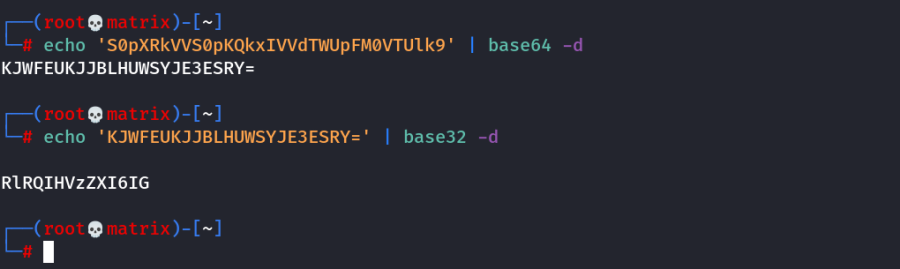
(14 Charecters)
Crest 1: RlRQIHVzZXI6IG
We continue to next room. We now got to the /galleryRoom

I click on Examine

We got the second crest. We decoded it twice and have the second crest part
We tried a lot with cyberchef. I din't find any solution. So i used the magic decoder.

It suggests first base32 is used to decode.
then base58 decoding is done.
We do the same in terminal. We get the crest 2 output.

(18 Charecters)
Crest 2: h1bnRlciwgRlRQIHBh
We moved on the next room. We go to /studyRoom.
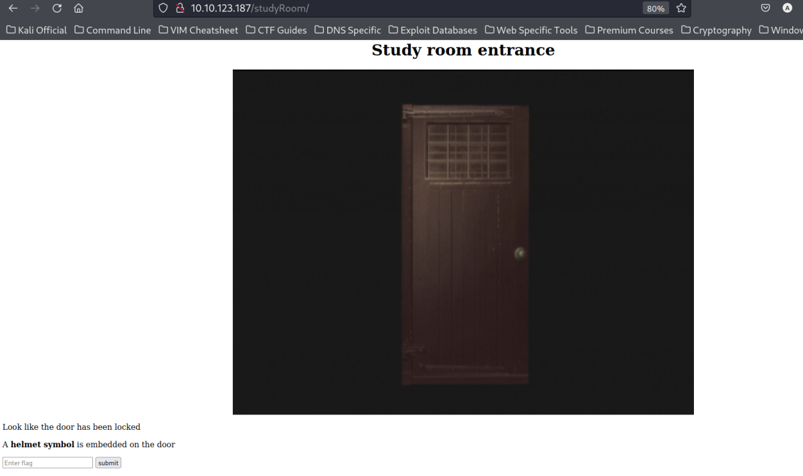
It asks for a helmet symbol. We do not have any such flags
We move on the next room. We enter /armorRoom/

It asks for a shield symbol. We do not have any such flags
We enter the shield flag here.
Flag Used: shield_key{48a7a9227cd7eb89f0a062590798cbac}

We click on the READ
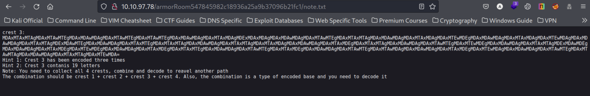
We found the crest 3. We will decode it and keep it as the third crest part
As usual we try to decode it with cyberchef's magic method. We found 3 encryptions used.
3 Times Encoded: base64 ‚Üí binary ‚Üí hex

we get the output
(19 Charecters)
Crest 3: c3M6IHlvdV9jYW50X2h
We move on the next room. We enter /attic/
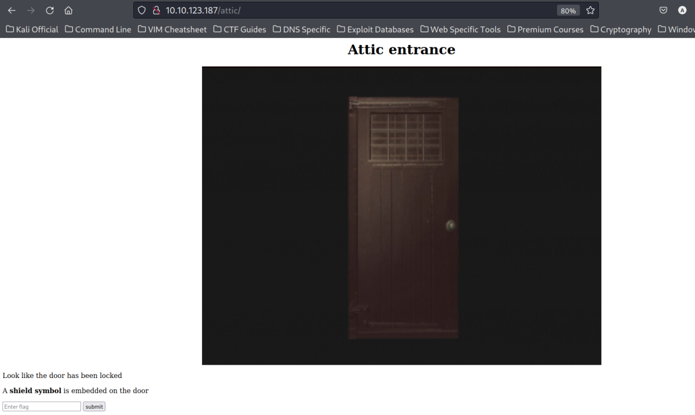
It asks for a shield symbol. We do not have any such flags
Flag Used: shield_key{48a7a9227cd7eb89f0a062590798cbac}
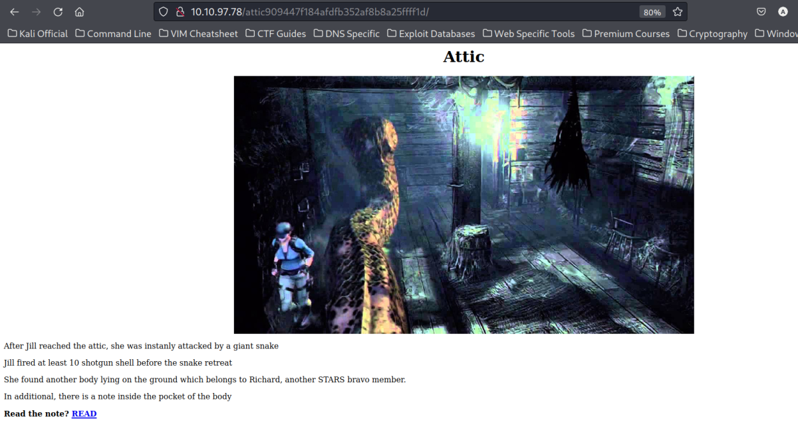
We click on READ
and got the fourth crest part

We use cyberchef again.

(17 Charecters)
Crest 4: pZGVfZm9yZXZlcg==
Now, we have all the 4 crests and decoded them.
Lets combine all of them
crest 1 + crest 2 + crest 3 + crest 4
RlRQIHVzZXI6IGh1bnRlciwgRlRQIHBhc3M6IHlvdV9jYW50X2hpZGVfZm9yZXZlcg==
We decode this:

FTP Credentials Found
Username : hunter
Password : you_cant_hide_forever

We get all the files locally and inspect them.

Lets check the hidden directory /hidden_closet

I then focus on the helmet_key.txt.gpg file. This file should contain the flag.
We use the following command to decrypt the file. But it asks for a paraphrase.
gpg --decrypt helmet_key.txt.gpg

We do not have a paraphrase currently so we cancel it.
Following is the terminal output.

We then check all the pictures and look for a paraphrase.
1st Picture: 001-key.jpg

We the extract the key-001.txt using the following.

key-001.txt: cGxhbnQ0Ml9jYW
2nd Picture: 002-key.jpg

key-002.txt: 5fYmVfZGVzdHJveV9
3rd Picture: 003-key.jpg
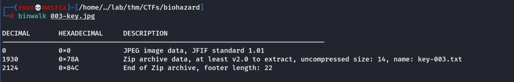
It seems that 003-key.jpg has hidden data
We thus extract the components
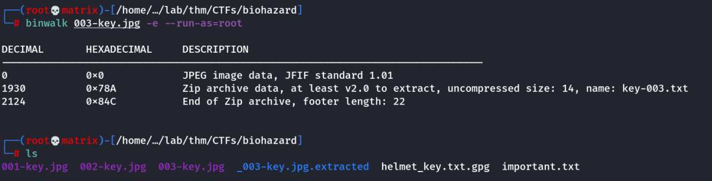
We then explore the extracted directory: _003-key.jpg.extracted

key-003.txt: 3aXRoX3Zqb2x0
Let us combine all the 3 keys found from the 3 images:
cGxhbnQ0Ml9jYW5fYmVfZGVzdHJveV93aXRoX3Zqb2x0
We try to decode it using base64 (Got hint from cyberchef)

Paraphrase Found: plant42_can_be_destroy_with_vjolt
Lets decrypt the helmet_key.txt.gpg file with the found paraphrase.
gpg --decrypt helmet_key.txt.gpg
It was successfully decrypted. Following is the helmet_key flag.

Now, that we have the helmet_key we can open 2 previously locked rooms.
/studyRoom
/hidden_closet
Lets open each of them witht the helmet_key.
Enumerating: /studyRoom
We open the /studyRoom
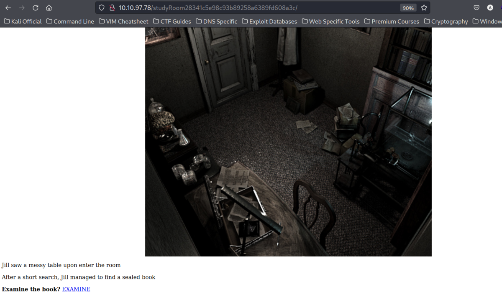
We click on EXAMINE. We get a doom.tar.gz file. We download it to our local machine.
Lets examine the file.
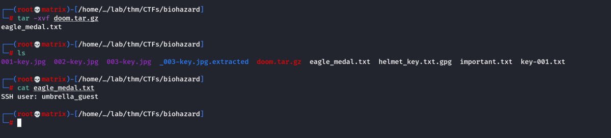
We got a SSH User: umbrella_guest
Enumerating: /hidden_closet
Next, lets enumerate the /hidden_closet directory and open it with the helmet_key

We click on READ & EXAMINE
READ
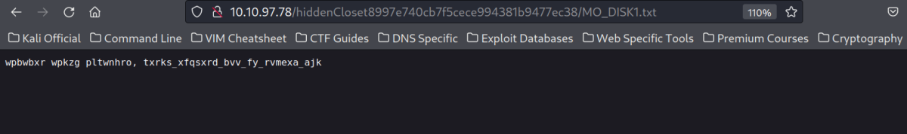
Above is the contents of MO disk 1
We know similar encryption was solved before. (Vigenere cipher)
But we had a key. Presently there seems to be no keys.
EXAMINE

Above is the contents of wolf_medal
We got a SSH Password: T_virus_rules
SSH Credentials
Username : umbrella_guest
Password : T_virus_rules
Foothold
We SSH into the machine with the above credentials and enumerate further.
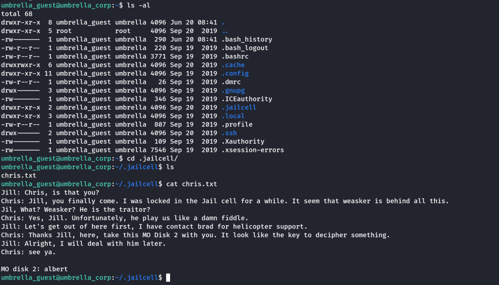
We get the whereabouts of Chris
It also tells that Weasker is the traitor
We also got the MO disk 2 : albert
Maybe we can use this to decrypt the MO disk 1 : wpbwbxr wpkzg pltwnhro, txrks_xfqsxrd_bvv_fy_rvmexa_ajk
We use cyberchef again with the new found key.

We cracked the contents.
We got: weasker login password, stars_members_are_my_guinea_pig
SSH Credentials
Username : weasker
Password : stars_members_are_my_guinea_pig
Then we login with the new SSH credential.

We also got the name of the ultimate lifeform: Tyrant
We get the root flag at /root.

Thanks!!